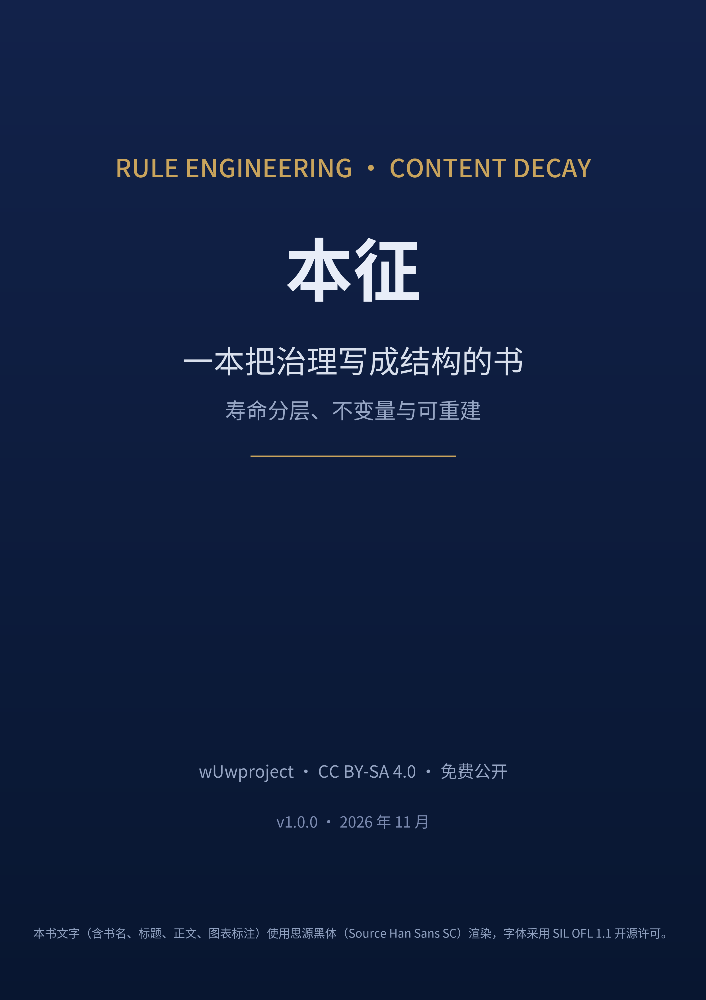

一本把治理写成结构的书：寿命分层、不变量与可重建

内容都会过期，所以按寿命分层、渐进地加、到期就废。本书从一套已运行的 AI 组织管理体系中抽出可迁移的规则工程方法：六个动作串成一条链，两条约束横切其上，四条不变量是删不掉的部分。书中只留骨架与机制，层数、条数、阈值都是参数。
15 篇正文（00–14）＋版权页／序言／阅读指南／结语／附录 A 术语表，合计 19 章。按寿命分五层落点，六个动作串成主线：判与落、写、检、长、退、裁，渐进加载与组织同构横切其上。约 57,084 字，8 张内联插图；PDF 116 页。
纯汉字数 ＋ 英文单词数 ＋ 数字串数（55,459 ＋ 783 ＋ 842），图块与图注不计字。与《我思故我写》《我写故我播》同口径，由权威字数脚本复算，构建器与脚本同值。
本书整体采用 CC BY-SA 4.0（署名—相同方式共享）——可自由复制、分发、演绎，须注明作者 wUwproject 并按相同协议共享；无 NC 限制，允许商业使用。